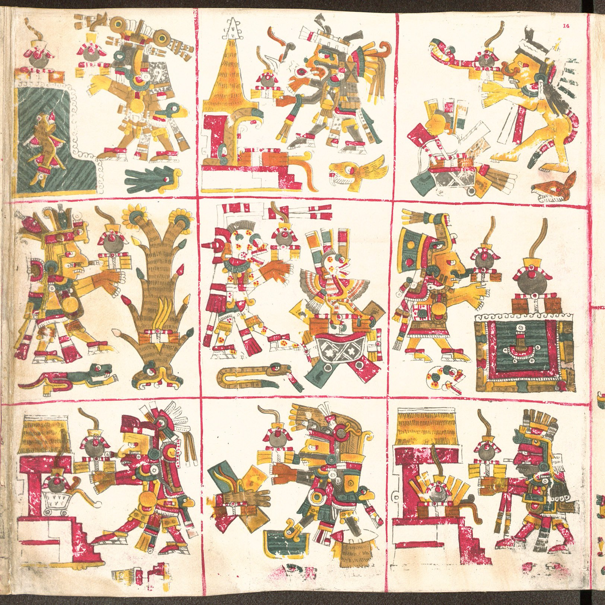
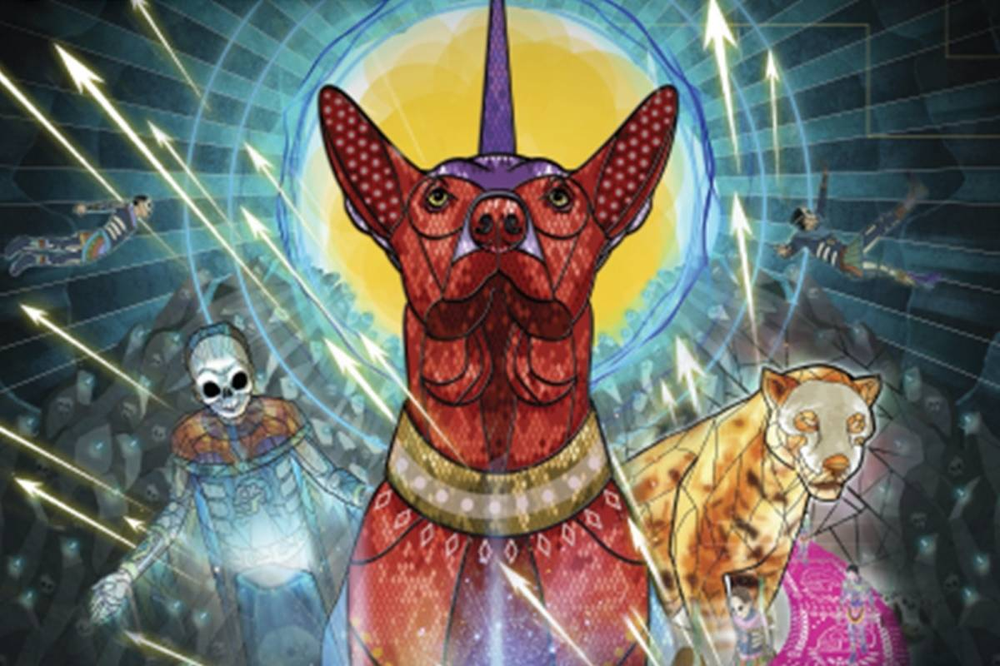

En la mitología mexica, los dioses primordiales (Omecíhuatl y Ometecuhtli) tuvieron cuatro hijos, que son los dioses creadores: Xipetótec, Quetzalcóatl, Tezcatlipoca y Huitzilopochtli, quienes organizaron al mundo en un universo horizontal, comprendido por lo puntos cardenales, y uno vertical, formado por tres partes.
Mictlán: el inframundo en Día de Muertos
SUPRAMUNDO (formado por 13 cielos).
MUNDO (que es donde vivimos).
INFRAMUNDO (nueve regiones horizontales orientadas hacia el norte).
Entre nuestras culturas prehispánicas, la vida y la muerte formaban una dualidad: una no podía existir sin la otra, es decir, la muerte era parte de la vida. Por eso, bastantes civilizaciones tenían rituales dedicados a la muerte al final del ciclo de cosecha del maíz (final de la temporada de lluvias), que más o menos ocurría en octubre o noviembre. Por ejemplo, en el centro del país se celebraban Miccailhuitontli (“La fiesta de los muertos pequeños”) y Huey Miccailhuitl (“La fiesta de los muertos grandes”).
Por otra parte, en Europa, en el siglo XI, el abad de Cluny (en Francia) propuso la celebración de todos los santos el 1o de noviembre. En el siglo XIII fue aceptada su propuesta por la Iglesia católica y en el XIV, se agregó el 2 de noviembre al calendario para orar por los fieles difuntos (los católicos del mundo).
En algunas partes de España, en el 1 de noviembre se llevaban alimentos a la iglesia para que fueran bendecidos y luego se ponían en casa, en la “mesa del santo”, frente a la imagen del santo predilecto de cada familia o región.
Cuando los españoles conquistaron lo que es hoy día nuestro país trayendo consigo su religión –la católica–, prohibieron los cultos indígenas a los muertos, pero al final muchas costumbres, creencias y celebraciones de estos pueblos se fueron mezclando con tradiciones y creencias católicas a lo largo de los años. Fue una manera de aceptar las creencias de los otros, pero sin abandonar del todo las propias.
Así, la actual tradición mexicana del Día de Muertos tiene un origen profundamente indígena, con raíces en creencias prehispánicas y europeas (católicas), y es una expresión de la idea del retorno de las ánimas de los difuntos al mundo de los vivos para visitarnos a nosotros, su familia, y nutrirse de los alimentos y recuerdos que les ofrecemos en los altares.
Mictlán es el inframundo mexica adonde llegaban quienes morían de muerte natural sin que importara su rango o riqueza, y donde debían atravesar nueve regiones superando obstáculos extraordinarios, algo que les tomaba cuatro años. Si lo conseguían su tonalli (alma) se liberaba y podía descansar con Mictlantecuhtli y Mictecacíhuatl, que eran esposos y los dioses del inframundo.
Las nueve regiones de Mictlán:
Itzcuintlán “donde habita el perro”
En esta región hay itzcuintles, los perros (xolos) de Xólotl (custodió al dios sol Tonatiuh hasta queatentó contra él y fue enviado a Mictlán).
Tepeme monamictlán “donde se juntan las montañas”
Aquí vive Tepeyóllotl, el señor de los jaguares y dios de las montañas y los ecos.
Itztépetl “montaña de obsidiana”
Es la morada de Itzlacoliuhqui, dios de la obsidiana, quien también atentó contra Tonatiuh y fue enviado al tercer reino de Mictlán.
Es la morada de Itzlacoliuhqui, dios de la obsidiana, quien también atentó contra Tonatiuh y fue enviado al tercer reino de Mictlán.
El sitio donde habita Mictlampehécatl, dios del viento del Norte y quien lleva el invierno desde Mictlán hasta la tierra; es la entrada al complejo Itzehecayan, una zona congelada con ocho lomas de piedras muy filosas.
Pancuetlacaloyan “donde uno vuela y se voltea como bandera”
Aquí empieza una zona desértica con ocho páramos en los que los vientos soplan de tal manera que cortan como navajas y mandan a los muertos de un lado al otro como banderas. También aquí habita Mictlampehécatl.
Temiminaloyan “lugar donde la gente es flechada”
En esta región hay un sendero que es atravesado por las flechas perdidas durante las batallas. (Algunos lo mencionan como un lugar de agua negra en el que habita la iguana Xochitonal).
Teyollocualoyan “donde te comen el corazón”
Teyollocualoyan “donde te comen el corazón”
Apanohualoyan “donde se cruza el agua”
Aquí desemboca el río Apanohuacalhuia, donde los muertos que perdieron el corazón deben luchar para salir de los nueve ríos de aguas negras.
Reto: Atravesarlo.
Iztmitlanapochcalocan es el final del largo y peligroso camino
En algunos textos se menciona una zona con mucha niebla que impide ver los alrededores. Debido a lo “vivido” en este trayecto de muerte, es cuando los muertos reflexionan sobre las decisiones de su historia y se conecta con lo que les sucedió en vida, convirtiéndose en uno con el todo.